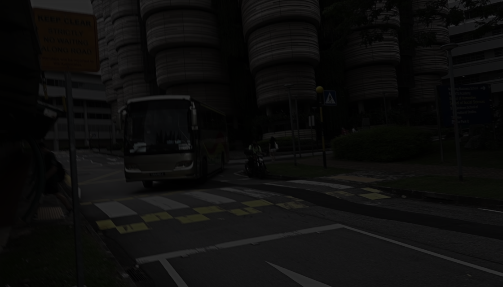
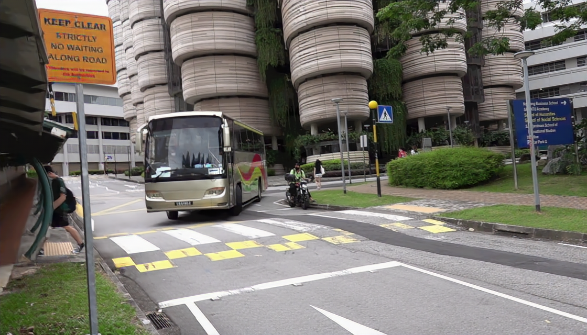
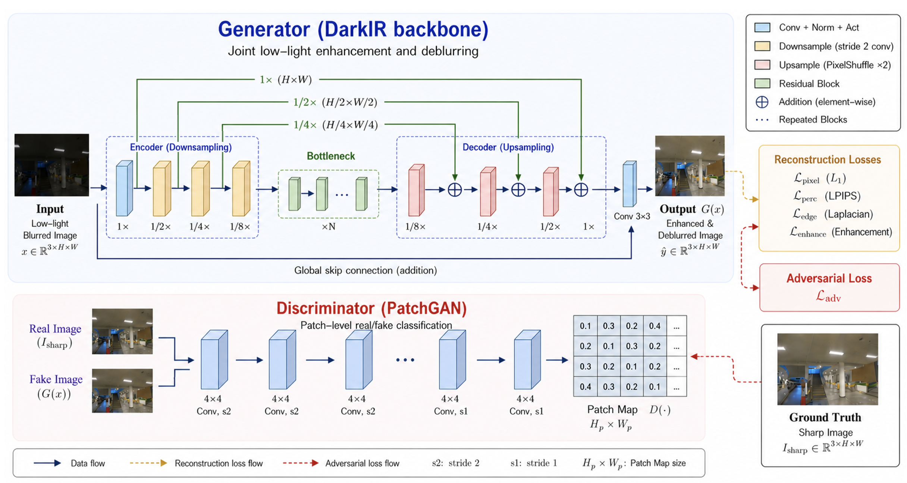

Input

Our Result

Abstract
Low illumination and motion blur severely constrain visual perception in extreme environments. Existing reconstruction-oriented networks often suppress fine local structure when minimizing distortion losses. We propose DarkIR-GAN, a generative adversarial framework for joint low-light enhancement and deblurring. It retains the DarkIR generator and its reconstruction objective, and adds only a PatchGAN discriminator with least-squares adversarial supervision. The baseline-continued and adversarial branches restore the same Stage-II generator, optimizer, and scheduler states and are each trained for 30 additional epochs. On the complete 1,800-pair LOL-Blur evaluation set, DarkIR-GAN improves LPIPS, MUSIQ, NIQE, and NRQM, while PSNR and SSIM remain numerically close to the continued baseline. The reported experiment shows improved perceptual-quality metrics with nearly unchanged distortion fidelity.
Method
Keep the restoration backbone. Add local adversarial supervision.

The two Stage-III branches share initialization, reconstruction losses, and a 30-epoch training budget.
Results on LOL-Blur
Final epoch-30 checkpoints · 1,800 image pairs
| Method | PSNR ↑ | SSIM ↑ | LPIPS ↓ | MUSIQ ↑ | NIQE ↓ | NRQM ↑ |
|---|---|---|---|---|---|---|
| DarkIR-GAN | 24.940 | 0.8553 | 0.1301 | 60.718 | 4.737 | 5.983 |
Improved perceptual-quality metrics with nearly unchanged distortion fidelity in the reported experiment.
A single-run controlled comparison. These are final-checkpoint results, rather than independently selected best checkpoints. See the manuscript for the full protocol and limitations.
Citation
@unpublished{he2026darkirgan,
title = {DarkIR-GAN: GAN-Based Low-Light Blurred
Image Restoration},
author = {He, Xinyu and Yan, Shi},
year = {2026},
note = {Accepted at VSIP 2026; author manuscript},
url = {https://david-he-nj.github.io/DarkIR-GAN/}
}